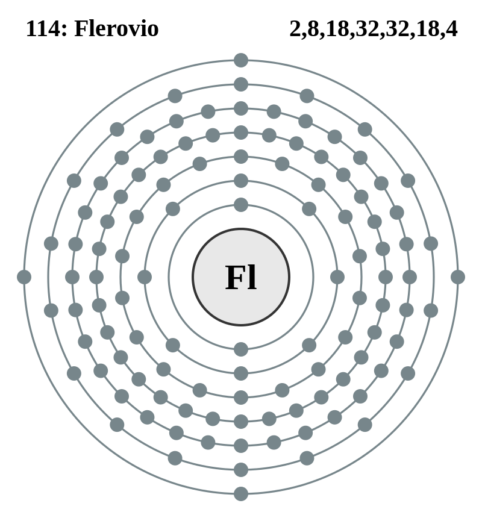

|
|
||
|
Flerovio Algunos estudios químicos realizados en 2007 y 2008 detectaron que es inesperadamente volátil y puede tener propiedades similares a los gases nobles. Podría también mostrar propiedades metálicas, aunque la cuestión de si se comporta más como un metal o como un gas todavía no está resuelta (en 2018). El flerovio se crea mediante fusión o por la desintegración radiactiva de elementos más pesados. |
 |
DATOS Número Atómico: 114 Peso Atómico: 289 Electronegatividad: - Configuración Electrónica: [Rn]5f14107s27p2 Estados de Oxidación: N/A No. de Electrones de Valencia: N/A |